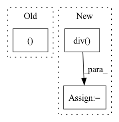

Pattern ID :17820
Before Change
if "y" in df:
df["y_scaled"] = np.empty_like(df["y"])
not_na = df["y"].notna()
df.loc[not_na, "y_scaled"] = (df.loc[not_na,"y" ].values - data_params.y_shift) / data_params.y_scale
return df
After Change
// df.loc[not_na, "y_scaled"] = (df.loc[not_na, "y"].values - data_params["y"].shift) / data_params["y"].scale
else:
df[name] = df[name].sub(data_params[name].shift)
df[name] = df[name].div( data_params[name].scale)
return df
def check_dataframe(df):In pattern: SUPERPATTERN
Frequency: 4
Non-data size: 3
Instances Fragment ID: 58547100
Project Name: ourownstory/neural_prophet
Commit Name: 36d4ccf3da490fdc7f501683e8aae4d29f1c4ea4
Time: 2020-06-19
Author: oskar.triebe@merantix.com
File Name: neuralprophet/df_utils.py
M Class Name: AnonimousClass
N Class Name: AnonimousClass
M Method Name: normalize(2)
N Method Name: normalize(2)
M Parent Class:
N Parent Class:
M File Name: neuralprophet/df_utils.py
N File Name: neuralprophet/df_utils.py
M Start Line: 104
M End Line: 109
N Start Line: 71
N End Line: 85
Before Change
df = df_list_norm
else:
// Global Normalization
df_joined, episodes = join_dataframes(df_list)
df = _normalization(df_joined, data_params)
df = recover_dataframes(df, episodes)
else:After Change
new_name = "t"
if name == "y":
new_name = "y_scaled"
df[new_name] = df[name].sub(data_params[name].shift).div( data_params[name].scale)
return df
def check_single_dataframe(df, check_y, covariates, regressors, events): Fragment ID: 58547103
Project Name: ourownstory/neural_prophet
Commit Name: 6619741f934957dff2a7fa4ff66620772d41471f
Time: 2022-02-14
Author: ourownstory@users.noreply.github.com
File Name: neuralprophet/df_utils.py
M Class Name: AnonimousClass
N Class Name: AnonimousClass
M Method Name: normalize(2)
N Method Name: normalize(3)
M Parent Class:
N Parent Class:
M File Name: neuralprophet/df_utils.py
N File Name: neuralprophet/df_utils.py
M Start Line: 258
M End Line: 294
N Start Line: 296
N End Line: 305
Before Change
:return:
pos_head, pos_rel, pos_tail = pos_exmpl
neg_head, neg_rel, neg_tail = neg_exmpl
pos_head_emb = self.entities_embeddings(pos_head)After Change
// Normalise embeddings of normal vectors
norms = torch.norm(self.normal_vector_embeddings.weight, p=2, dim=1).data
self.self.normal_vector_embeddings.weight.data = self.self.normal_vector_embeddings.weight.data.div(
norms.view(self.num_relations, 1).expand_as(self.self.normal_vector_embeddings.weight))
// TODO: Check indexing
pos_heads, pos_rels, pos_tails = batch_positives
neg_head, neg_rel, neg_tail = batch_negatives Fragment ID: 58547096
Project Name: pykeen/pykeen
Commit Name: cb5e375b88bcd5599ec8671b59d31aa3f2404cce
Time: 2018-09-20
Author: ali-mehdi@live.de
File Name: src/kg_embeddings_model/trans_h.py
M Class Name: TransH
N Class Name: TransH
M Method Name: forward(3)
N Method Name: forward(3)
M Parent Class: nn.Module
N Parent Class: nn.Module
M File Name: src/kg_embeddings_model/trans_h.py
N File Name: src/kg_embeddings_model/trans_h.py
M Start Line: 86
M End Line: 96
N Start Line: 118
N End Line: 133
Before Change
// returing:
// GPT2Model/Block[2]/MLP[mlp]/Dropout[dropout]
// GPT2Model/Block[2]/aten::add5567
return (self.l_29(self.l_28(torch.mul(input=torch.mul(input=t_33, other=0.5), other=torch.add(input=Tensor.tanh(torch.mul(input=torch.add(input=t_33, other=torch.mul(input=Tensor.pow(t_33, exponent=3), other=0.044715)), other=0.7978845608028654)), other=1)))), t_32 )
def state_dict(self,device=None):
// we return the state dict of this part as it should be in the original modelAfter Change
// calling torch.div with arguments:
// GPT2LMHeadModel/GPT2Model[transformer]/Block[3]/Attention[attn]/aten::matmul5854
// GPT2LMHeadModel/GPT2Model[transformer]/Block[3]/Attention[attn]/prim::Constant5855
t_39 = torch.div(input=Tensor.matmul(Tensor.permute(Tensor.view(t_36, size=[Tensor.size(t_36, dim=0), Tensor.size(t_36, dim=1), 12, torch.div(input=Tensor.size(t_36, dim=-1), other=12)]), dims=[0, 2, 1, 3]), other=Tensor.permute(Tensor.view(t_37, size=[Tensor.size(t_37, dim=0), Tensor.size(t_37, dim=1), 12, torch.div(input=Tensor.size(t_37, dim=-1), other=12)]), dims=[0, 2, 3, 1])), other=8.0)
// calling Tensor.size with arguments:
// GPT2LMHeadModel/GPT2Model[transformer]/Block[3]/Attention[attn]/aten::div5856
// GPT2LMHeadModel/GPT2Model[transformer]/Block[3]/Attention[attn]/prim::Constant5860
t_40 = Tensor.size(t_39, dim=-1)
// calling Tensor.slice with arguments:
// GPT2LMHeadModel/GPT2Model[transformer]/Block[3]/Attention[attn]/aten::slice5880
// GPT2LMHeadModel/GPT2Model[transformer]/Block[3]/Attention[attn]/prim::Constant5881
// GPT2LMHeadModel/GPT2Model[transformer]/Block[3]/Attention[attn]/prim::Constant5882
// GPT2LMHeadModel/GPT2Model[transformer]/Block[3]/Attention[attn]/aten::size5861
// GPT2LMHeadModel/GPT2Model[transformer]/Block[3]/Attention[attn]/prim::Constant5883
t_41 = self.b_3[0:9223372036854775807:1][:, 0:9223372036854775807:1][:, :, torch.sub(input=t_40, other=Tensor.size(t_39, dim=-2)):t_40:1][:, :, :, 0:t_40:1]
// calling Tensor.contiguous with arguments:
// GPT2LMHeadModel/GPT2Model[transformer]/Block[3]/Attention[attn]/aten::permute5905
t_42 = Tensor.contiguous(Tensor.permute(Tensor.matmul(self.l_32(Tensor.softmax(torch.sub(input=torch.mul(input=t_39, other=t_41), other=torch.mul(input=torch.rsub(t_41, other=1, alpha=1), other=10000.0)), dim=-1, dtype=None)), other=Tensor.permute(Tensor.view(t_38, size=[Tensor.size(t_38, dim=0), Tensor.size(t_38, dim=1), 12, torch.div(input=Tensor.size(t_38, dim=-1), other=12)]), dims=[0, 2, 1, 3])), dims=[0, 2, 1, 3])) Fragment ID: 58547093
Project Name: saareliad/ftpipe
Commit Name: 9ddf98456ca57cac3a4a982fc519c5a71642dc25
Time: 2020-03-10
Author: saareliad@campus.technion.ac.il
File Name: models/partitioned/gpt2.py
M Class Name: Partition0
N Class Name: Partition0
M Method Name: forward(2)
N Method Name: forward(2)
M Parent Class: nn.Module
N Parent Class: nn.Module
M File Name: models/partitioned/gpt2.py
N File Name: models/partitioned/gpt2.py
M Start Line: 460
M End Line: 467
N Start Line: 396
N End Line: 430